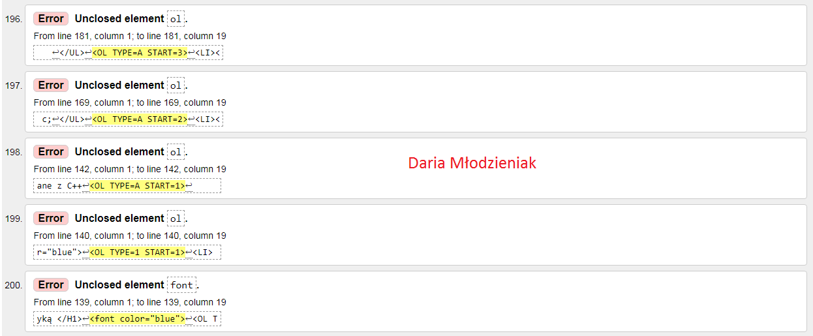
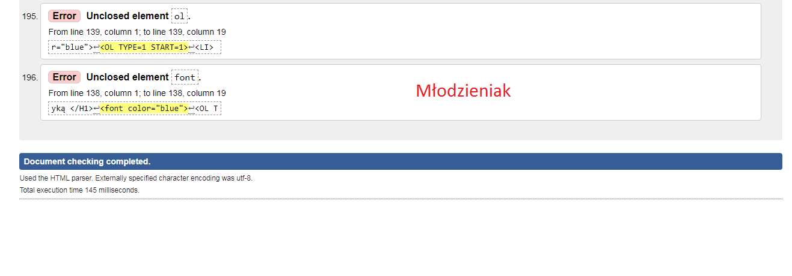

Walidacja-jest to proces sprawdzania strony internetowej pod względem błędów składniowych. Aby dokonać walidacji strony musimy uruchomić inną stronę lub program zwany walidatorem. Walidator pokazuje gdzie są błędy oraz podaje jaki to jest błąd (z opisem).


wróć